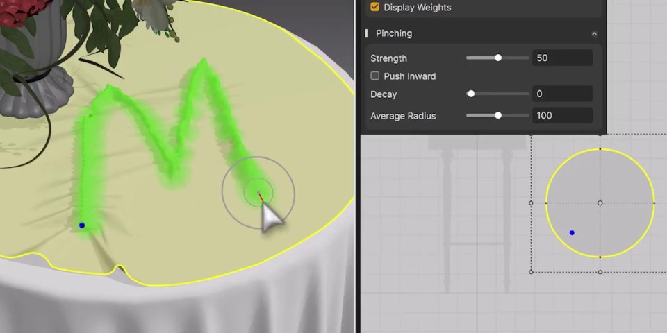

01
Marvelous Designer 2026.1：皺褶繪製與沿縫撕裂進入服裝設計流程
新版加入可直接 painting wrinkles 與沿 seam ripping 的工具，讓破損、局部皺褶能更早在 garment 階段被設計與模擬。

Production
★★★★★
用途
Character Cloth
先測
Export
完整分析
Production 判斷
把 wrinkle painting 與 seam ripping 放進服裝工具本體，能讓布料破損與局部皺褶更早進入設計迭代，而不是等到雕刻或貼圖階段補救。
流程建議
先用同一件 garment 做乾淨版、局部皺褶版與破損版，確認 pattern、simulation 與下游 retopo 的差異。
限制
新增細節仍需驗證 export 後 topology、UV 與遊戲引擎 shader 是否能保留預期效果。
20 分鐘實測
挑袖口或褲膝做 wrinkle paint，再沿一條 seam 做破損，輸出到既有角色流程檢查 cleanup 成本。